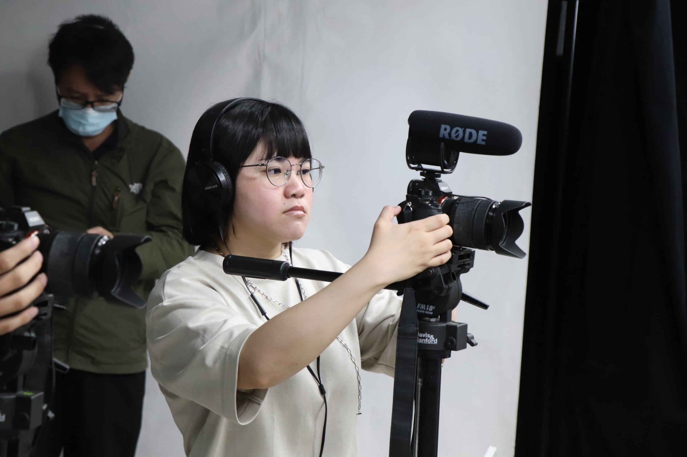
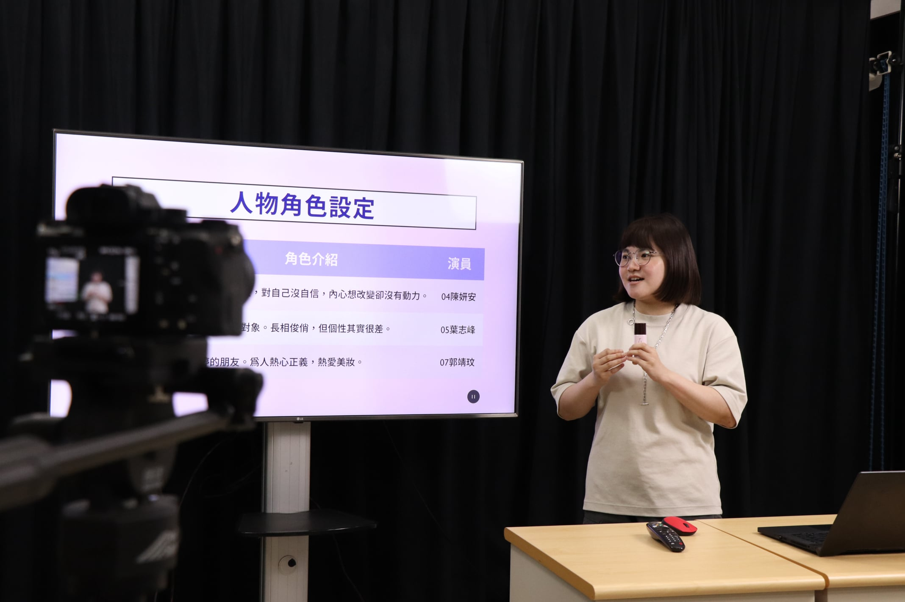
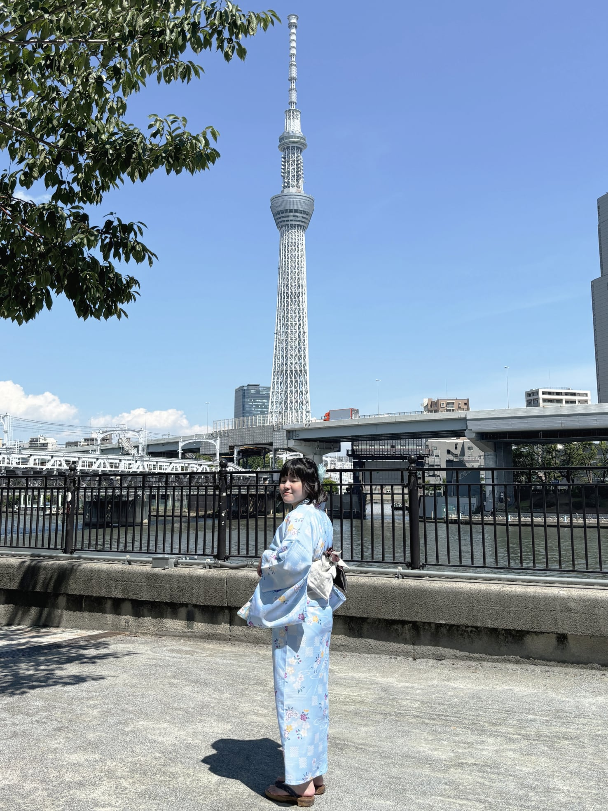

►成長｜來自Z世代的新北市民
►學歷｜中國文化大學 觀光事業學系
►性格｜謹慎、負責、貼心、組織能力高
►興趣｜影音剪輯、排版美編、文書處理、整理資料

►Canva
►Photoshop
►Illustrator
►威力導演
►DaVinci
大四寫了第1部劇本，踏上了編劇的不歸路。
大學4年的報告有9成以上都是由我製作簡報與書面資料，熟悉PPT與Word。畢業後開啟了PPT佛系接案人生。
►正職｜海爾斯行銷有限公司－節目企劃(2023/10－2023/12)
畢業後第一份正職。因非本科系畢業，光是收到面試邀約就感激不已。在這份工作中主要負責撰寫影片腳本、經營粉絲團，也跟著前輩們外出拍片過2次，對於相關經驗不足、卻充滿熱忱的我來說是個有趣又充滿挑戰性的工作。但彼此期待不符，與公司協調後離開。
►校內實習｜實習旅行社－店長(2022/9－2023/6)
擁有高度企圖心及責任感的我成為店長，負責排班、管理時數、與指導老師及雄獅旅遊聯繫等工作。實習期間內培養更多的溝通技巧、善於表達；擁有領導能力，如何管理團隊、分配工作；公私分明，不因同事是朋友就偏袒；規劃能力提升，利用節慶舉辦活動，提升90%曝光度。在實習學習到的能力都成為我日後的養份。
►打工｜摩斯漢堡－前台收銀PT(2020/7－2021/4)
誤打誤撞進入了摩斯漢堡工作，在為期不長的時間裡，我學會POS機操作、出餐及送餐服務，記住常客之餐點需求、推薦新品增加店內營收。因當時生活有過多壓力，只好先提出離職。
►泰山職訓局｜數位影音設計與行銷01期(2024/4－2024/10)
離開前公司後，我決定透過職訓班來增強我的專業技能，於是報名並順利錄取了課程。我學會了Photoshop、Illustrator、DaVinci、平面攝影、動態攝影等專業技能。
這裡的一切都是我在學生時期無法接觸的，我很珍惜每個上課日。
►專題組長｜職訓班影音專題組長(2024/8－2024/10)
學生時期擁有多次組長經歷的我，自告奮勇地擔任組長，期望能給大家一個有效率、規劃完整的製作進度，而我也確實做到了！
►活動組長｜大學系上迎新活動美宣組長(2020/7－2020/9)
在無人願意接下組長一職的情況，我主動接受了這個職位，並立即分配工作。與夥伴們合作下成為效率最高的組別，使我獲得成就感。
►多次小組報告組長｜2019/9-2023/6
主動制定繳交日期、不定時追蹤組員進度。
►剪過影片｜2012－現今
從12歲初次接觸，過了多年依然樂於在剪片中尋找成就感。
►做過海報｜2020－現今
大學－手繪或Canva。需要套模板才做得好的程度，無法獨立排版，但具有基礎美感，經常追蹤各個設計網站或相關帳號尋找靈感。
職訓－PS或AI。學會Adobe系統後，終於讓自己擁有更多排版的選擇性。
►寫過劇本｜2022－現今
大學－第一部劇本是根據我的生命經歷改編（作品集<他的背影>），寫完後內心感到一股炙熱的衝動，認為自己生活中有許多素材可改編成故事。大學時選修「劇本創作」課程，為了挑戰自己，每次老師出的靈感發想作業，我都加以改編成劇本。
職訓－寫劇本對我來說並不困難，我很快就完成了新故事。這個故事也成為後續專題製作的主題。
►演過戲｜2022－現今
大學－課堂作業因找不到演員，自願擔任女主角。本擔心沒經驗會演得不好，幸虧對手戲的對象經驗豐富，也藉由劇組的鼓勵讓我對演戲充滿熱情。在表演過程中我慢慢放鬆，享受屬於我的舞台。
職訓－專題拍攝中，我也擔任演員並飾演女主角，有了大學的經驗，我並不會恐懼鏡頭，反而更專注於鏡頭中的自己。
►PPT製作｜目前有一間簽約的公司。

1.活動現場紀錄影片（商品故事行銷企劃簡報）
前期：採3機拍攝，使用外接式麥克風收音。
後期：剪輯成精華影片。
2.商品故事行銷企劃簡報
前期：挑選【Sofina Ange控油瓷效妝前隔離乳】作為主要產品。
中期：撰寫商用故事行銷文案、規劃影片大綱。
後期：製作完整版劇本。
3.仿拍30秒影片
前期：挑選1支短片模仿拍攝，並擔任導演監督畫面。
後期：剪輯成具創意性的短片。
4.主題影片
前期：主題構思、文字腳本。
中期：分鏡腳本、拍攝順序表、道具需求表。
後期：拍攝、場佈、演員。
一、 影音製作
1.中醫小劇場
進公司後的第一個專案。
前期：擔任主企劃，發想在中醫診間可能會發生的事。
中期：與同事南下至醫院拍攝。
後期：已離職，轉由其他同事接手。
2.飲料營養迷思
唯一一支在公司從頭參與到尾的專案。
前期：擔任主企劃，參考內分泌科醫師給的資料與營養師建議，將內容改編成影片，並來回討論影片內容。
中期：與同事南下至醫院拍攝，監督影片內容與執行狀況。
後期：負責審片，標題發想與撰寫影片宣傳短文。
3.新生兒迷思
前期：擔任主企劃，參考兒科醫師給的資料，將內容改編成影片。
中後期：已不在公司，轉由其他同事接手。
4.傷心症候群
前期：擔任主企劃，上網蒐集資料統整成腳本後，再與主管和醫師討論。
中後期：已不在公司，轉由其他同事接手。
5.骨科門診趣事
前期：由前同事完成腳本。
中後期：進行審片、標題發想、影片說明短文。
6.古老偏方
前期：由前同事完成腳本。
中後期：進行審片、標題發想、影片說明短文。
7.急診室小劇場
前期：由前同事完成腳本。
中後期：進行審片、標題發想、影片說明短文。
8.野！孩子起步走
此專案專門紀錄偏鄉小學的運動隊伍。
前期：參與內部討論，協助主企劃處理細項。
中期：擔任製片，跟著公司出差至臺東太平國小拍攝，主要負責訂餐、準備生活用品、與民宿及客戶聯絡。
後期：已不在公司。
二、 社群行銷
1.健康貼文
擔任公司【543男方基地（現為達特543）】粉絲團小編，撰寫多篇宣導健康的知識型文章。
1.萬聖節活動
為宣傳實習單位，大4上學期策劃一場應景的萬聖節活動。透過校內的「全人點數」作為賣點，打卡可獲得智育點數1點；若額外答對題目，可再獲得糖果與折價券1張。
2.2022全國大專院校綠色旅遊遊程規劃競賽
實習單位全體成員參加德明財經科技大學舉辦的綠色遊程競賽，經過1個多月的討論，團隊順利進入決賽；在決賽中也獲得佳作，獲得殊榮。
3.實習成果發表會
系上大4下學期固定的活動。從學期初就和團隊成員分工製作，主要負責規劃影片內容、影片拍攝執行與後製剪輯、製作書面檔本、上台報告。成發當天在現場+線上共100多名師生前進行報告。

電話｜0978-330-027
Email｜ska891124@gmail.com